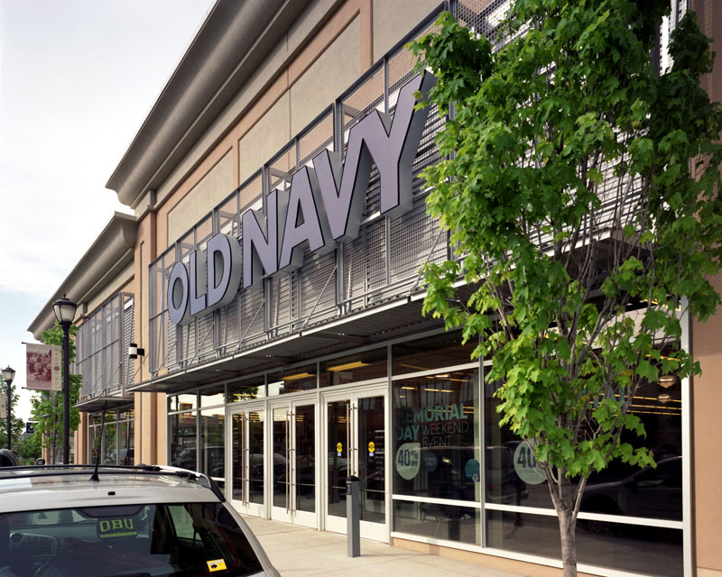
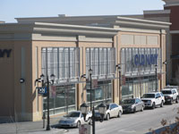
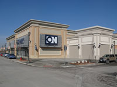
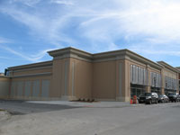
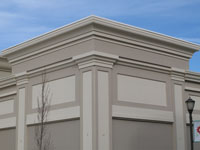
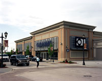

<div class="row">
 <div class="large-12 columns">
  <h1>
   Enhancing innovation while cutting costs
  </h1>
  <p>
   “The tilt-up process saved a great deal of time.” - Owners
  </p>
  <p>
   Meyer Brothers Building Company was contacted by Old Navy 
        to build their retail facility in the Zona Rosa development in
        Kansas City, MO.
   <br/>
  </p>
  <p>
   The building was constructed using
        site-cast concrete. The outside is complimented
        with cast-in stone, direct
        applied synthetic stucco, foam stucco
        cornices, and water tables.
  </p>
  <p>
   Pilasters highlight this structure and
        bring a modern elegance for customers
        to enjoy.
  </p>
  <blockquote>
    Your team has done an outstanding job... only positive things to say about the professionalism and collaboration that has made this project so successful.<br>
    &mdash; Scott Stalcup, AIA, CDP
  </blockquote>
  <h2>
   Project details
  </h2>
  <div id="projectTable">
   <table border="0" cellpadding="3" cellspacing="0">
    <tr>
     <td width="131">
      Square Footage
     </td>
     <td width="287">
      20,300 S.F.
     </td>
    </tr>
    <tr>
     <td>
      Location
     </td>
     <td>
      Zona Rosa | Kansas City, MO
     </td>
    </tr>
    <tr>
     <td>
      End Use
     </td>
     <td>
      Retail
     </td>
    </tr>
    <tr>
     <td>
      Completion Date
     </td>
     <td>
      November 2007
     </td>
    </tr>
    <tr>
     <td>
      Architectural Features
     </td>
     <td>
      Cast-on-site tilt-up wall panels | Cast-in stone | Direct applied synthetic stucco | Pilasters | Foam stucco cornices
     </td>
    </tr>
    <tr>
     <td>
      Owner/Reference
     </td>
     <td>
      Steiner &amp; Associates
      <br/>
      To protect our clients privacy, please
      <a href="mailto:info@meyer-companies.com?subject=Inquiry from meyer-companies.com">
       contact
      </a>
      us for development reference information.
     </td>
    </tr>
    <tr>
     <td>
      Architect
     </td>
     <td>
      Gould Evans Associates
     </td>
    </tr>
   </table>
  </div>
  <a href="../../Images/projects/Old-Navy-ZR/Old_Navy_ZR-01-800.jpg">
   
  </a>
  <br><br>
  <ul class="large-block-grid-3">
   <li><a href="../../Images/projects/Old-Navy-ZR/Old_Navy_ZR-03-800.jpg">
     </a></li>
   <li><a href="../../Images/projects/Old-Navy-ZR/Old_Navy_ZR-04-800.jpg">
     </a></li>
   <li><a href="../../Images/projects/Old-Navy-ZR/Old_Navy_ZR-05-800.jpg">
     </a></li>
   <li><a href="../../Images/projects/Old-Navy-ZR/Old_Navy_ZR-06-800.jpg">
     </a></li>
     <li><a href="../../Images/projects/Old-Navy-ZR/Old_Navy_ZR-02-800.jpg">
     </a></li>
</ul>
 </div>
</div>
